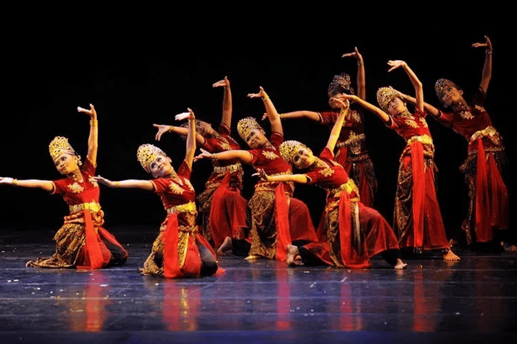

MENGENAL SEJARAH DAN ASAL USUL TARIAN JAIPONG
Tari jaipong merupakan salah satu tarian trdisional
yang berasal dari Jawa Barat. Dalam perkembangannya, Tari jaipong muncul pertama kali di bandung.
tarian ini merupakan gabungan dari sejumlah tarian tradisional lainnya, yakni pencak silat, Tari Tayuban, dan Tari Ketuk Tilu.
Oleh sebab itu, Tari jaipong terlihat begitu energik dan memiliki gerakan yang unik. Lantas, seperti apa sejarah dan asal usul Tari Jaipong? Simak pembahasannya.
Tari Jaipong merupaan sebuah tarian tradisional yang berasal dari daerah
Karawang,Jawa Barat. Tarian ini berkembang di era tahun 1960 an. Aawalnya tarian ini dikenal masyarakat dengan nama Tari Banjet.
sebuah pertunjukan kesenian tari yang di tampilkan dengan gerakan tari dan di iringi alunan musik berupa gamelan.
dulu tarian ini dijadikan sebagai hiburan bagi masyarakat. Tari Jaipong adalah sebuah inovasi yang dibuat oleh seniman
yang berasal dari daerah karawang bernama H.Suanda.
sumber:GramediaBlog.com

sumber:wikipedia